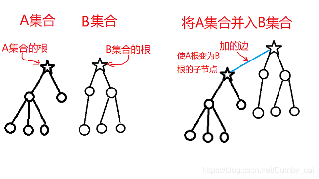
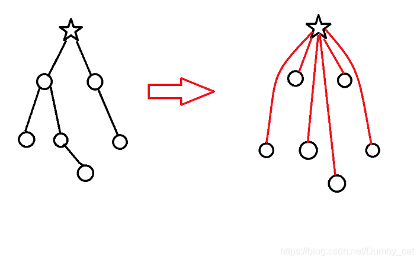

并查集学习笔记
学习下并查集及其常规操作（内附代码实现）。
并查集是甚么
并查集（Disjoint-set data structure），直译为 “不交集数据结构”，顾名思义，它是种数据结构。并且，它是种用来处理 不交集（不相交集合）的合并和查询问题 的数据结构。
并查集维护的是元素之间的关系。
常规操作
每个不交集通常可以处理成一棵树，方便操作。
初始化时，将每个元素所在的集合设为它本身，体现在具体操作上就是将每个元素的父节点设为元素本身（此时每个元素所在集合的根都是元素本身）。
找根
递归实现。
1 | int find(int x) |
合并
将 A集合 并入 B集合。体现在操作上就是将 A集合 的根的父节点设为 B节点 的根，这样通过将 A集合 的根设为 B集合 的根的儿子就可将 A集合 并入 B集合 。

c++代码实现：1
2
3void merge(int a, int b){
father[ find(a) ] = find(b);
}
查询
要明白查询查的是啥。
查询的是两元素是否在同一集合中。
据此容易看出只要判断两个元素所在集合的根是否是同一个就能判断出两者是否在同一集合中。
代码实现：
1 | bool get(int a, int b) |
优化
能看出当在极端条件下（如集合的树的结构退化成一条链），find 函数的效率会非常低，常用的有几个优化方法。
路径压缩
通过将每一个元素的父节点都指向根节点，可大大提高效率。

优化时只要将 find 函数稍作修改就行了。
代码实现：1
2
3int find(int x){
return x == father[x] ? father[x] : father[x] = find(p[x]);
}
按秩合并
按照一定顺序合并集合（如只将将小的集合并入大的集合）。代码懒得打
扩展域和边带权的并查集
扩展域
此时集合中存储的是元素间的关系（且通常这些关系是有传递性或可推导性）。
具体看题。
边带权
并查集实际上是由若干树组成的森林，我们能在树中每条边上记录一个权值，即维护一个数组 d，用 d[x] 保存节点 x 到父节点 fa[x] 之间的权值。在每次路径压缩后，每个访问过的节点都会直接指向树根，如果我们同时更新这些节点的 d 值，就可以利用路径压缩过程来统计每个节点到树根间的路径上的一些信息。这就是所谓的“边带权”的并查集。 ——李煜东《算法竞赛进阶指南》
具体看题。
例题
模板题
可以自己打打练练手。1
2
3
4
5
6
7
8
9
10
11
12
13
14
15
16
17
18
19
20
21
22
23
24
25
26
27
28
29
30
31
32
using namespace std;
const int N = 10001001;
int p[N];
int find(int x)
{
return p[x] != x ? p[x] = find(p[x]) : x;
}
int n, m;
int main()
{
scanf("%d%d", &n, &m);
for (int i = 1; i <= n; i++)p[i] = i;
for (int i = 1; i <= m; i++)
{
string c;
cin >> c;
int a, b;
scanf("%d%d", &a, &b);
if (c[0] == 'M')p[find(a)] = find(b);
else
{
if (find(a) == find(b))printf("Yes\n");
else printf("No\n");
}
}
return 0;
}
搭配购买
题目描述
第一行输入三个整数 n,m,w，表示有 n 朵云，m 个搭配和你现有的钱的数目。
第二行至 n+1 行，每行有两个整数 c, d，表示第 i 朵云的价钱和价值。
第 n+2 至 n+1+m 行 ，每行有两个整数 $u_{i}$, $v_{i}$ 。表示买第 u 朵云就必须买第 v 朵云，同理，如果买第 v 朵就必须买第 u 朵。
求能买到最大价值的云朵的价值。
题解
乍一看像是有依赖的背包问题，但数据规模太大（$10^{9}$），考虑用并查集加上01背包。
用并查集将所有绑定的云朵合并成一个云朵，再用01背包。
1 |
|
程序自动分析
题目描述
给一串两数相等或两数不相等的约束条件，判断是否矛盾。
题解
先把所有不等于的式子记录下来，把等于的数所在的集合合并，最后判断不等式中的两数是否不在同一集合。
由于数据规模较大，要用哈希，此处直接用 STL 中的 unordered map 代替。
1 |
|
银河英雄传说
题目描述
N 艘战舰排成 N 列，给定两种指令：
- M i j，表示让第 i 号战舰所在列的全部战舰保持原有顺序，接在第 j 号战舰所在列的尾部。
- C i j，表示询问第 i 号战舰与第 j 号战舰当前是否处于同一列中，如果在同一列中，它们之间间隔了多少艘战舰。
编写程序处理这些命令。
题解
多加两个数组 d 和 siz 分别表示节点到其所在集合的根节点的距离和其所在集合的大小。
此处用到“边带权”的并查集。
在 find 函数的路径压缩的同时更新 d。
在合并时更新 siz。
两个同一集合中的元素间的距离就是 abs(d[x] - d[y]) -1。
代码如下：
1 |
|
奇偶游戏
题目描述
自己看题面去。
题解
开一个数组 sum 表示序列的前缀和，那么在每个问题中：
S[l-r] 有偶数个 1，等价于 sum[l - 1] 和 sum[r] 奇偶性相同；
S[l-r] 有奇数个 1，等价于 sum[l - 1] 和 sum[r] 奇偶性不同。
此时的 sum 是不确定的，是变量。
此题很像程序自动分析，但传递关系不只一种：
- 若 a 与 b 奇偶性相同，b 与 c 奇偶性也相同，那么 a 与 c 奇偶性相同。
- 若 a 与 b 奇偶性相同，b 与 c 奇偶性不同，那么 a 与 c 奇偶性不同。
- 若 a 与 b 奇偶性不同，b 与 c 奇偶性也不同，那么 a 与 c 奇偶性相同。
另外，此题数据规模大，但实际要用的点较少，考虑用离散化，此处用 STL 中的 unordered map 代替。
处理此题的多种转移关系有两种办法：边带权 或者 扩展域。
边带权
边权 d 为 0 或 1，表示 x 与 father[x] 奇偶性 相同 或 不同。
路径压缩时，将边上的权值做异或运算，得到 x 与根节点的奇偶性关系。
设离散化后 l -1 的值为 x，r 为 y，ans 表示每个读入的回答（0表示偶数个，1表示奇数个）。
先检查 x 和 y 是否在同一集合。
若在同一集合：
d[x] xor d[y] 即为 x 与 y 的奇偶性关系，若 d[x] xor d[y] != ans，则是假话。
若不在同一集合：
合并。首先要将根节点合并，然后因为 d[p] 未知（p为A集合根节点，q为B集合根节点，将 p 的父节点设为 q），可由方程 ans = d[x] xor d[y] xor d[p] 推得 d[p] = ans xor d[x] xor d[y] 。
代码：1
2
3
4
5
6
7
8
9
10
11
12
13
14
15
16
17
18
19
20
21
22
23
24
25
26
27
28
29
30
31
32
33
34
35
36
37
38
39
40
41
42
43
44
45
46
47
48
49
50
51
52
53
54
55
using namespace std;
const int N = 20010;
int n, m, p[N], d[N], ans;
unordered_map<int, int> S;
int get(int x)
{
if (S.count(x) == 0)S[x] = ++n;
return S[x];
}
int fi(int x)
{
if (x != p[x])
{
int t = fi(p[x]);
d[x] ^= d[p[x]];
p[x] = t;
}
return p[x];
}
int main()
{
scanf("%d%d", &n, &m);
n = 0;
ans = m;
for (int i = 0; i < N; i++)p[i] = i;
for (int i = 1; i <= m; i++)
{
int x, y;
string a;
scanf("%d%d", &x, &y);
cin >> a;
x = get(x - 1), y = get(y);
int t = 0;
if (a[0] == 'o')t = 1;
int px = fi(x), py = fi(y);
if (px == py) {
if ((d[x]^d[y]) != t)
{
ans = i - 1;
break;
}
} else
{
p[px] = py;
d[px] = d[x] ^ d[y] ^ t;
}
}
printf("%d", ans);
return 0;
}
扩展域
将每个节点 x 拆成两个节点 $x_{odd}$ 和 $x_{even}$ 表示 x 是奇数或偶数，通常叫成 x 的奇数域 和 偶数域。
设离散化后 l -1 的值为 x，r 为 y，ans 表示每个读入的回答（0表示偶数个，1表示奇数个）。
由关系来判断：
- ans == 0，合并 $x_{odd}$ 和 $y_{odd}$ ，合并 $x_{even}$ 和 $y_{even}$ 。表示“x为奇数”的条件与“y为奇数”的条件可互相推出；“x为偶数”的条件与“y为偶数”的条件可互相推出。
- ans == 1，合并 $x_{odd}$ 和 $y_{even}$ ，合并 $x_{even}$ 和 $y_{odd}$ 。表示“x为奇数”的条件与“y为偶数”的条件可互相推出；“x为偶数”的条件与“y为奇数”的条件可互相推出。
判断时，若 ans == 0， $x_{odd}$ 和 $y_{even}$ 在同一集合中则矛盾；若 ans == 0， $x_{odd}$ 和 $y_{odd}$ 在同一集合中则矛盾。
代码：
1 |
|
食物链
上一题的进阶版，不想多讲了，这里给一个 边带权 的代码，扩展域的代码就留作作业吧。
1 |
|
OK就这样吧，讲的很草率，反正没人看我博客，毕竟这只是“一只蒟蒻”的“学习笔记”罢了。
有错误 D 我。